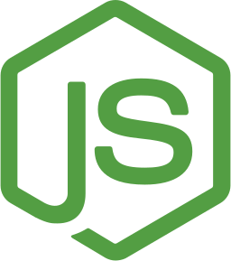
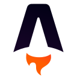

CSS |
CSS |
 Tailwind
Tailwind
Material CSS3
Subir a GitHub
Juegos
Tailwind css
Material Tailwind
Bloques Tailwind
Otros frameworks para CSS
 JavaScript |
APIs
JavaScript |
APIs
Buenas Prácticas en Programación
Material de Consulta
Material de clases
APIS: Lenguajes de Intercambio de Datos
Recursos y Librerías

NodeJS |Node.js®
Otros lenguajes de Backend
Express.js
Otros frameworks para Node.js
Material de clases
 GIT | GITHUB
GIT | GITHUB
GIT --fast-version-control
Material Git
Github
Material Github
 React |
React |  Vite
Vite
React
Material de React
Ejercicios
Otros frameworks para JavaScript
Vite
Material de Vite
Otras herramientas de empaquetado
 PostGreSQL |
PostGreSQL |  MongoDB
MongoDB
PostGreSQL
Material de PostGreSQL
Ejercicios BBDD
Otras Bases de Datos Relacionales
MongoDB
Material de MongoDB
Otras Bases de Datos NoSQL

Astro |